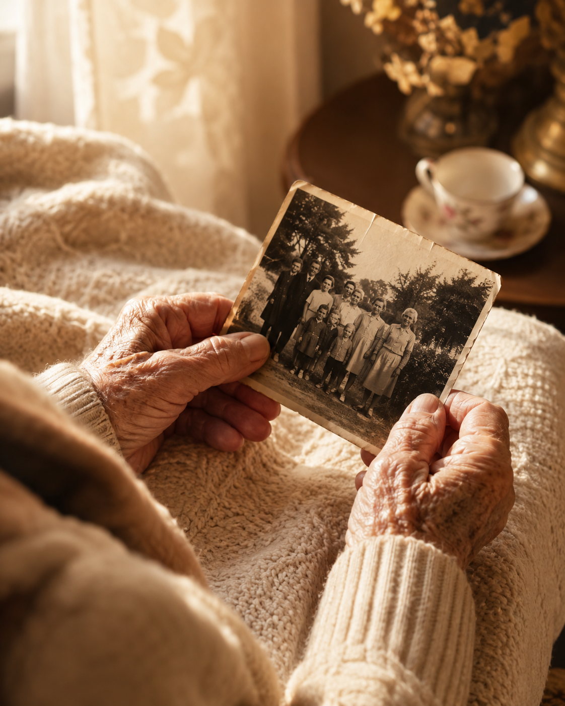

A gentle way through one of dementia care's hardest repeating questions.

Maria had been caring for Joan for almost a year before it started happening every day.
"Where's Mum? Is she coming to get me?"
At first Maria tried logic. "Joan, your mum passed away a long time ago." It never helped. Joan's face would crumple, and she'd relive the loss all over again — fresh, raw, every single time. Some afternoons she asked eleven, twelve times. Each answer landed like the first.
It took Maria a few weeks of watching, of not rushing to fix it, before she understood something important: Joan wasn't asking for facts. She was asking for safety. Underneath the question was a feeling — I'm frightened, I don't recognise where I am, I want someone who makes this make sense.
So Maria stopped correcting, and started answering the feeling instead.
"She's not here right now, but I'm here with you. You're safe. Shall we have a cup of tea while we wait?"
No lie. No confrontation. Just calm, and company.
Once Joan settled a little, Maria opened Together and tapped into Songs of a Life. A tune from Joan's teenage years came on — something soft, something old. Joan's shoulders dropped. Her fingers found the rhythm on the arm of her chair. For a few minutes, the worry loosened its grip.
The questions didn't stop — they still come, most days. But something shifted. Joan settled faster each time. She'd reach for Maria's hand, take a breath, and let it go. One afternoon, mid-question, Joan suddenly looked at her and said, "You're very kind to me, you know." Then, moments later, asked about her mother again — and Maria realised that was Joan's version of peace. Not the absence of the question. The presence of someone steady beside it, and a familiar song to hold onto.
Together includes Songs of a Life and more conversation games to ease anxious moments.
Try Together